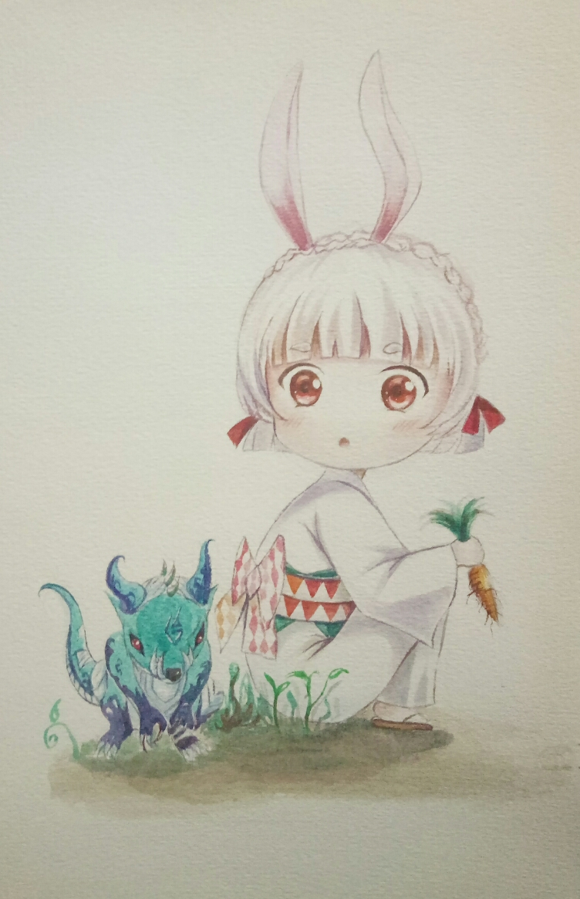

|
本以为不再提笔写下什么，一张空白纸张摆放在我面前，许久未动，不是不想写，而是觉得自己的文字太过平凡、缺陷过多，所以害怕去写。很多时候在意别人的眼光，无法释怀自己，总会刻意去纠结是是非非、该与不该。 而今，我看着这张透明的纸，像是红尘路上的一个知己，它用它最贴切无声的语言劝诫我“朋友，我愿用心来倾听你内心的悲鸣，我愿为你化解所有的忧伤”，为此，我敞开了心扉地诉说过往的欢乐和流年的哀伤，让曾经的、现在的、美丽的、痛苦的画面交织在一起，编成一场又一场美丽的梦，烙入我心底。  不知从何时起，少了欢乐才发现最美的时光却在曾经，那景那物已深深地活在了梦里，萦绕于今。当我们痛苦绝望的时候，有一个声音告诉我“至少你还有梦”，也许是风的呼唤，或许是雨的吹打，一路与风雨兼程，感受苦尽甘来。所以，今日我又在寻昨日的梦境，而昨日又不经意地溜走，每日每夜反反复复地寻觅又等待，等到“落花无情、流水无意”，待到“三冬过去、万物复苏”，我已然明白时间经不起等待。 当你在擦肩而过的时候，才发现最美的相遇，是第一次的邂逅相遇，错过了流年的再次相逢，已不再是当年的模样。从此人海两茫茫，回不去最初的地方，终是相望不相守。思绪的墨香仍在流动，我手中紧握的素笔任我挥霍，零乱了文字的优雅，零乱了你的心田 。原来难过是因为沉默太久，今天混乱的心情，是苦涩流进了心里，每一次感觉像分离，又融入了一点酸酸的味道。 |
|||||||
| 最新照片 | ||||||||
|
||||||||
| 小调查 |